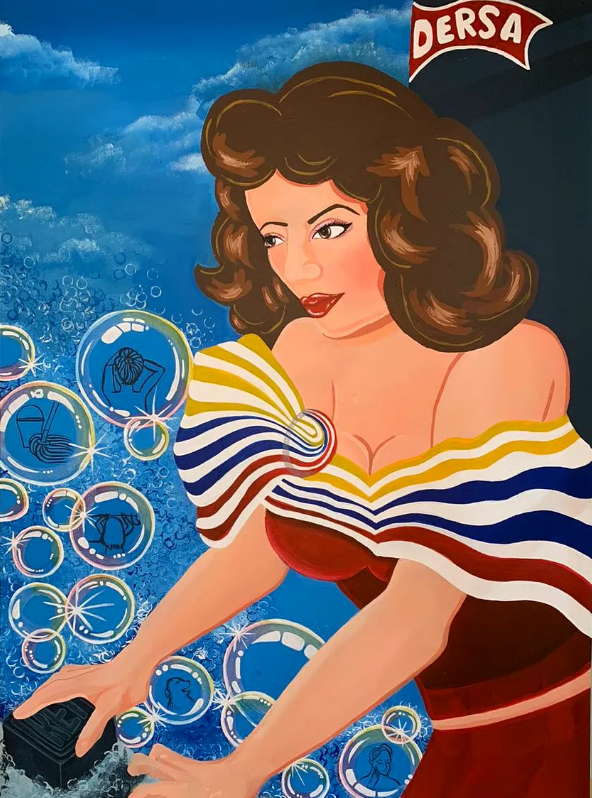
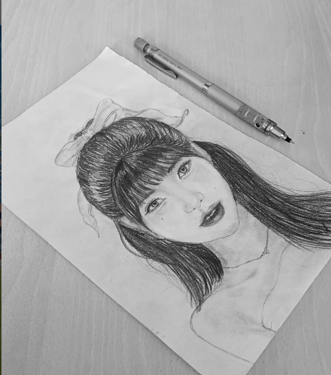
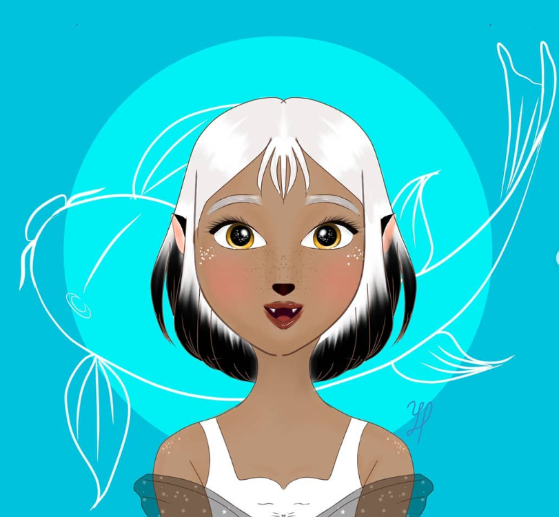
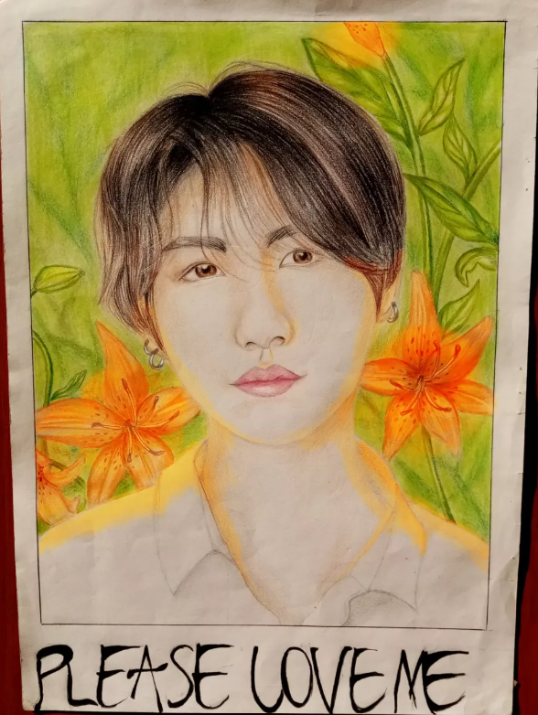

Portafolio profesional de dibujo, ilustración digital, acuarela, pintura acrílica y caricaturas.
Ver GaleríaMi nombre es Yuleisy Paola Puentes Hernández y cuento con experiencia en técnicas tradicionales y digitales de dibujo artístico.
Dentro de mis habilidades se encuentran la elaboración de retratos en grafito y color, ilustraciones digitales, caricaturas, acuarelas y pintura acrílica.
Este portafolio fue desarrollado con el propósito de mostrar parte de mis trabajos artísticos y ofrecer información sobre los servicios que puedo brindar a diferentes clientes y proyectos creativos.




Retratos en grafito, color y técnicas mixtas.
Obras en acuarela y acrílico.
Creación de personajes y diseños digitales.
Diseños personalizados para eventos y regalos.